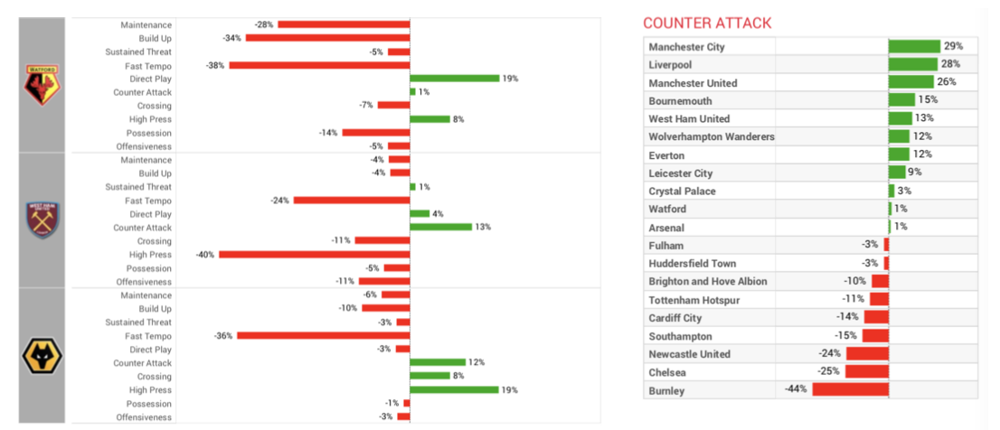
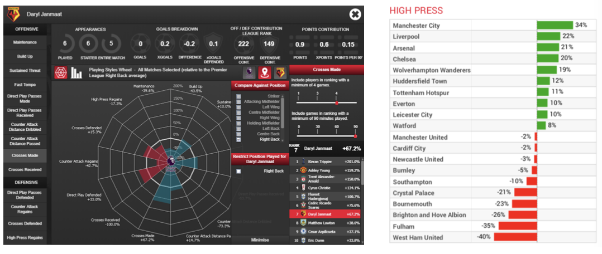

/ / / / / /
Watford Playing Style Insight Requests:
“A Playing Styles tool will provide objective definitions of tactical preferences of teams, enabling us to compare and contrast similar playing styles when identifying suitable targets. This will be a industry-leading tool that can provide detailed analysis of teams playing styles (to be defined), across different leagues, where we can highlight similar teams or players to delve further into or to filter before acting further. Example/draft definitions can be seen below, but are subject to change/define:
- Direct Play
- Counter Attack
- Maintenance
- Build-Up
- Crossing
- High Press
- Fast Tempo
The specific definitions of each playing style will need to be clearly defined in order for teams to be objectively analysed.”

Team-based playing style insights

Player-based playing style insights